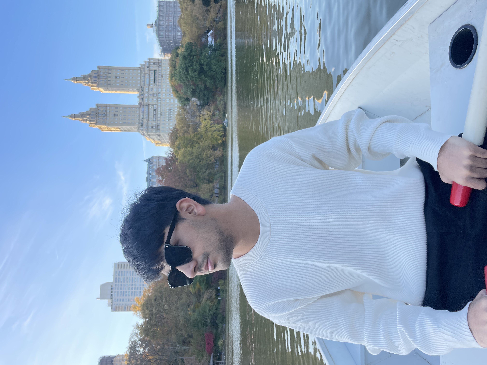
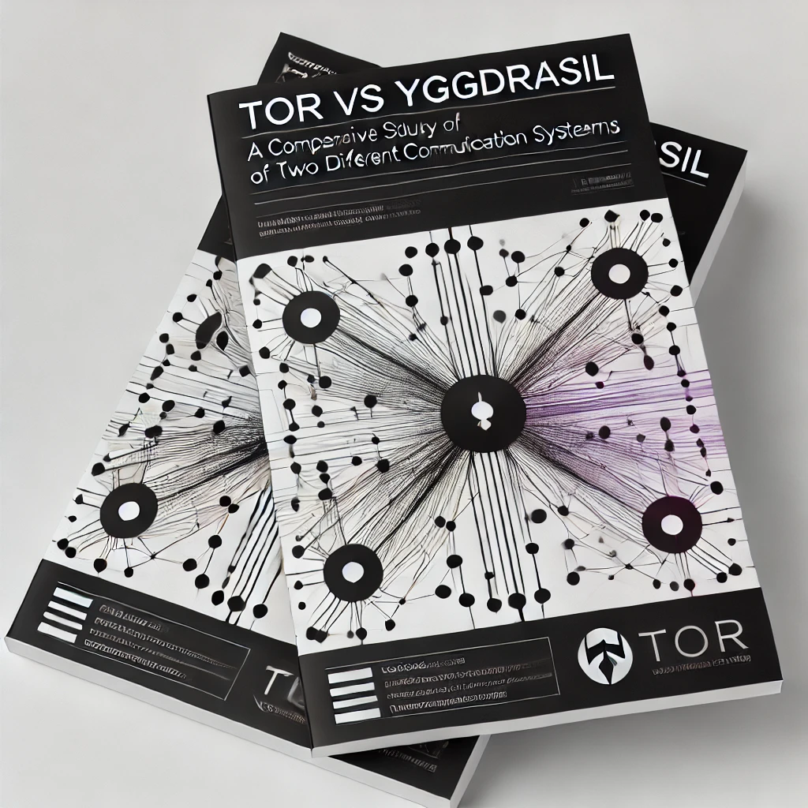
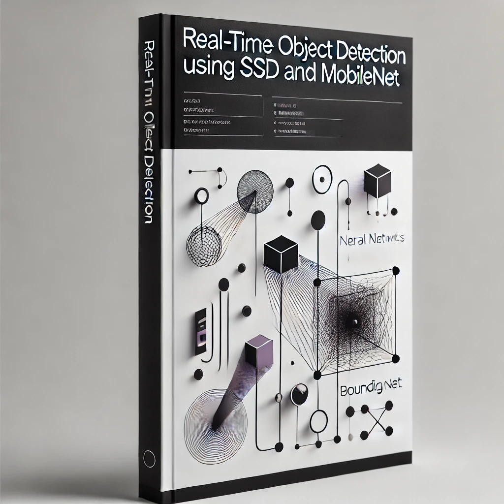

01. About

nyc — est. 2023
I'm an AI engineer with a CS foundation from NYU and hands-on experience building LLM-powered systems — RAG pipelines, fine-tuned models, and agentic workflows — using LangChain, the OpenAI API, and Hugging Face Transformers. I'm comfortable across the full stack, from vector database design (Pinecone, Chroma, Weaviate) to production deployment.
Previously at Google (Summer of Code), where I worked on network systems under mentorship from the Erlang Ecosystem Foundation. I'm a published researcher in ML and computer vision (IEEE ICICT 2022). Currently at Optimum building data pipelines on GCP — deepening my cloud and data infrastructure foundation while shipping AI projects on the side.
What I build: systems where LLMs actually work in production — low latency, grounded outputs, minimal hallucination.
ai / llm
- LangChain · RAG
- OpenAI API
- HF Transformers
- Llama 2 fine-tuning
- Prompt Engineering · MLflow
- Pinecone · Chroma · Weaviate
data & cloud
- BigQuery (GCP)
- Snowflake · Databricks
- AWS (Athena, Glue, Lambda)
- Kafka
- Docker · CI/CD
languages
- Python
- SQL
- JavaScript / TypeScript
- Java · C++
peer-reviewed publications
users served by LLM pipelines I built
networks analyzed for WBD reporting
students mentored in open source
02. Experience
Data Analyst
Optimum · New York, NY
- Engineer BigQuery SQL pipelines processing NRP-weighted viewership data across 16-month tuning windows, supporting audience overlap analysis for major sports properties (NFL, NBA, MLB, NHL).
- Lead analytical workstreams for the Warner Bros. Discovery client — HBO MAX authentication impact analysis, wholesale subscriber behavior modeling, and cross-platform viewership reporting across 24 O&O networks.
- Built HBO linear tuning analysis showing authenticated households watched 14–16% more HBO linear content — directly informing WBD's wholesale retention strategy.
- Supporting Databricks migration of Promo Analysis, NRP, and MAX Reporting pipelines across Snowflake and BigQuery, plus the AWS Athena → GCP BigQuery migration.
Data Analyst Intern
Optimum · New York, NY
- Led an end-to-end metric validation framework for feedzone logic, quarter-hour segmentation, and broadcast month derivation — ensuring statistical accuracy for C-suite reporting.
- Built automated data quality checks reducing manual validation overhead across high-volume streaming datasets.
AI Engineer Intern
SalesCaptain · New York, NY
- Fine-tuned Llama 2 on domain-specific sales conversation data using Hugging Face Transformers, improving response relevance for automated customer engagement.
- Built a RAG pipeline with LangChain and Pinecone to ground LLM outputs in company-specific knowledge bases, reducing hallucinations in customer-facing AI responses.
- Engineered prompt-chaining pipelines for automated follow-ups, reminders, and customer insights — serving 500+ users across SMS and webchat.
- Integrated the Twilio API with LangChain-orchestrated LLM workflows for real-time AI-powered SMS automation.
Information Technology Engineer
NYU Wasserman Center for Career Development · New York, NY
- Developed a secure ticketing system in Python with integrated authentication, reducing response times by 50%.
- Optimized NYU's cloud infrastructure, achieving a 30% increase in system scalability, and built real-time analytics pipelines for internal performance monitoring.
Product Analyst
Media.net · Mumbai, India
- Led website migration projects and performance analysis on relational databases — a 20% reduction in launch errors, saving $32,000.
- Served as the primary technical liaison for product issues, cutting support ticket resolution time by 30%; documentation work drove a 15% increase in user engagement.
- Optimized AWS cloud infrastructure for performance and cost efficiency.
Google Summer of Code
Google · Erlang Ecosystem Foundation · Remote
- Worked on network systems for the Erlang ecosystem under Google/EEF mentorship — contributing open-source code around the Yggdrasil encrypted mesh network.
- Earned a recommendation letter from my Google mentor for dedication and technical contributions to open-source software.
03. Projects
Real-Time Trip Analytics Platform
End-to-end ETL pipeline processing ride data into BigQuery for real-time analytics across revenue, distance, and usage trends. Automated data workflows reduce manual effort and improve reliability at scale.
Stock Market Streaming Pipeline
Kafka + AWS Glue streaming pipeline processing 100K+ trade records in real time. Analytics-ready datasets in Athena with Python/SQL transformations supporting trade volume and trend analysis.
Advanced Malware Detection System
Machine learning model classifying 21,736 malware files into 9 families with XGBoost. Optimized feature extraction from 200GB of data, cutting processing time by 35% and significantly reducing classification error.
AWS Serverless Microservices
Serverless microservices architecture on AWS Lambda, API Gateway, and DynamoDB. RESTful API design optimized for efficient data handling, with emphasis on scalable, cost-efficient cloud architecture.
Tor vs Yggdrasil Network Analysis
Comparative study of encryption and anonymity in Tor versus the decentralized Yggdrasil Network, proposing Yggdrasil as a future-proof alternative. Published by IEEE (ICICT 2022).
Real-Time Object Detection (SSD + MobileNet)
End-to-end deep learning approach combining SSD with MobileNet for efficient real-time detection and tracking on low-compute devices. Published in IJRASET (March 2022).
04. Research & Credentials

Tor vs Yggdrasil: A Comparative Study of Two Different Communication Systems
view publication ↗IEEE · April 2022
Analyzes the encryption and anonymity features of Tor against the decentralized Yggdrasil Network, proposing Yggdrasil as a future-proof alternative for anonymous communication.

Real-Time Object Detection using SSD and MobileNet
view publication ↗IJRASET · March 2022
A deep learning approach to object detection in an end-to-end fashion — combining SSD and MobileNet for efficient detection and tracking on devices that lack computational power.
AWS Certified Solutions Architect — Associate
Amazon Web Services
issued jun 2025 · valid through oct 2030Contextual Advertising
GumGum University
credential verifiedMS, Computer Science — New York University
Machine Learning & AI, Distributed Systems, Cloud Infrastructure & Security. Graduate Life Ambassador.
2023 – 2025 · new york, nyBTech, Computer Science — University of Mumbai
Operating Systems, DBMS, Software Engineering, AI. Lead of the Competitive Programming Team.
2018 – 2022 · mumbai, indiaOpen Source Mentor — AnitaB.org
Mentored 150+ students on making their first open-source contributions.
sep – nov 2021Google Mentor Recommendation Letter
Awarded by my Google Summer of Code mentor for dedication and impactful open-source contributions with the Erlang Ecosystem Foundation.
google summer of code05. Writing
Building a Real-Time Trip Analytics Platform
End-to-end walkthrough of building an ETL pipeline from raw ride data to BigQuery-backed dashboards.
Building a Real-Time Stock Market Streaming Pipeline
Kafka + AWS Glue architecture for processing 100K+ trade records with low latency.
"Even death has a heart." — Markus Zusak
A reflection on The Book Thief — beauty, brutality, and the human condition as narrated by Death.
"For you, a thousand times over." — Khaled Hosseini
On redemption, loyalty, and friendship in The Kite Runner.